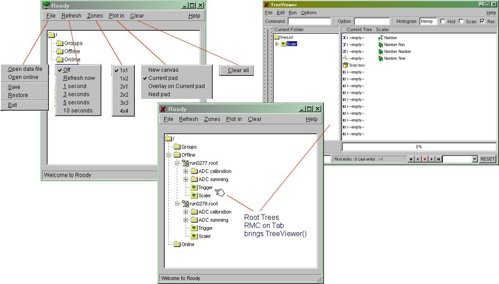
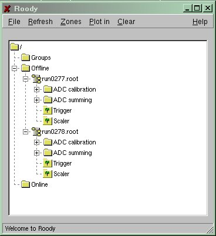
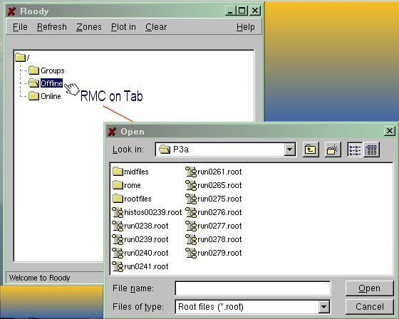
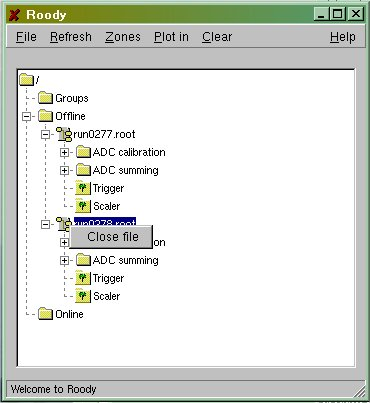
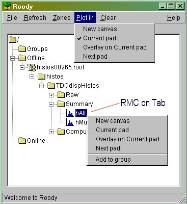
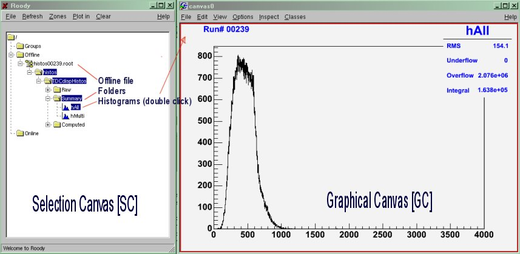
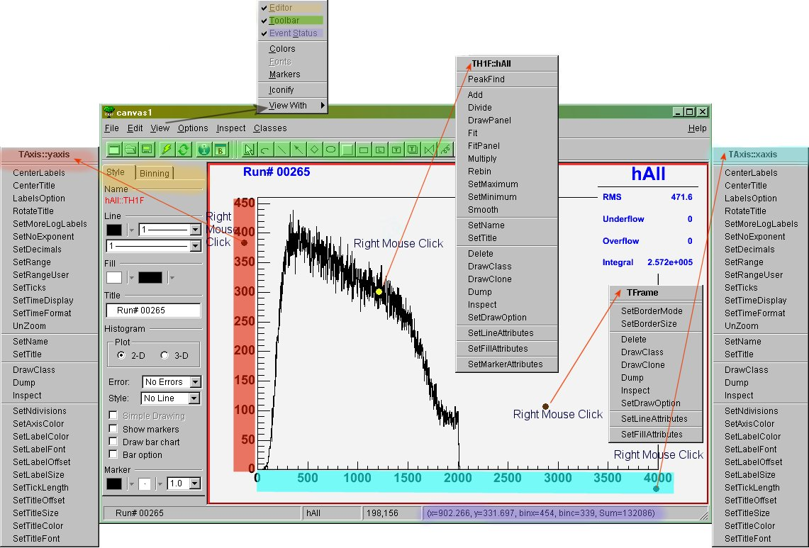
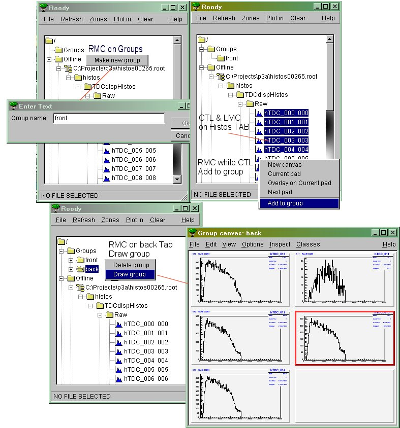

Quickstart
Quickstart -
top -
top 
Roody is mainly a mouse driven application. Using the build-in "context sensitive" option of ROOT, Roody try to extend this tool by adding it own functions. The canvas generated by Roody are striclty ROOT canvas. All Root object manipulation tools are applicable.
The internal features of Roody are described below starting from the initial Roody canvas.
To simplify the reference to the different parts of the application display, the following terms and acronyms will be used.
- SC Selection Canvas: The initial Roody window.
- GC Graphical Canvas: The graphic canvas where histogram is displayed.
- RMC Right Mouse Click: Pop up context sensitive menu (based of location of the mouse).
- LMC Left Mouse Click: Selection operation.
- DLMC Double Left Mouse Click: Selection operation (required in SC).
- Tab Tab: Entry on one single line in the SC.
- DR Data Region: Close region of the graphic around the data bin display.
- XR or YR X axis or Y axis region: Graphic region respectively below the X-axis and on the left of the Y axis.
- CR Canvas Region: Graphic region excluding the data and axis regions.
The content of the "Selection Canvas" (SC) is composed of 3 main Tabs
- Group use Tab for user defined collection of histograms.
- Offline use Tab for Root or Hbook file.
- Online use Tab for connection to an active analyzer such as the midas analyzer or the ROME analyzer.
- The open root file may not contain just histograms but Trees and extra folders can be present too. In the case of Trees, by DLMC the Tree Tab, the TreeViewer() from ROOT will be invoked for further manipulation.
Selection Convas Menu listing.

The menu list of the Selection Canvas is specific to Roody.
- File
- Open data file : Open file.root or file.hbook. Opened files will be placed under the offline Tab in SC (see Open file).
- Open online : Open network connection to a running analyzer. Requires host and socket port number for activating the connection. Link to online analyzer will be placed under the online Tab in the SC (see Online use).
- Save : Save the overall configuration of the Roody application into a XML file description (see Save option).
- Restore : Restore from a previously saved XML configuration the Roody settings (see Restore option)
- Refresh : see Refresh option
- Off : Deactivate the automatic histogram content refresh for the online connection.
- Refresh now : Force an update of the current histogram display content for the online connection.
- n seconds : Activate the automatic histogram content refresh based on the time interval selection.
- Zone : see Zones option
- j x k : Define the canvas configuration for the upcoming histogram display request.
- Plot in : see Plot option
- New Canvas : When selecting a histogram for display, force its appearance in a new canvas.
- Current Pad : Replace the current histogram with newly selected one. If no canvas is available, a new canvas with the default zone setting will be created.
- Overlay on Current Pad : Overlay the selected histogram on the current displayed pad.
- Next Pad : When selecting a histogram for display, force its appearance into the next pad of the canvas. In the case the canvas has only one pad, replace its content.
- Clear : Clear the content of all the histograms of the online connection.
- There is 3 different ways to open files:
- When invoking the roody application through the argument list
- Start roody with multiple root files.
> roody run0277.root run0278.root

...
- Right mouse click on the offline tab -> Select file
- Right Click on the offline tab. The File selector will appear. ...

...
- From the pull-down menu of the roody application
- File -> open data file -> Select file
- There is one way to close an opened file within Roody
- Right Click on the file name tab, a "close file" will appear to active the closure.

...
This option provides currently the mean of saving the online connection and the group assignments into a .XML file. In the future, this option will be extended to include also the GC content and their positions. The format of the .XML follows the DTD scheme.
<?xml version="1.0" encoding="ISO-8859-1"?>
<!DOCTYPE roody SYSTEM "roody.dtd">
<!-- created by Roody on Thu Nov 04 22:10:14 2004 -->
<roody>
<file>C:\Projects\p3a\histos00265.root</file>
<group>
<name>MyGroup</name>
<histogram>
<name>hTDC_001</name>
<source>C:\Projects\p3a\histos00265.root</source>
</histogram>
<histogram>
<name>hTDC_002</name>
<source>C:\Projects\p3a\histos00265.root</source>
</histogram>
<histogram>
<name>hTDC_003</name>
<source>C:\Projects\p3a\histos00265.root</source>
</histogram>
<histogram>
<name>hTDC_004</name>
<source>C:\Projects\p3a\histos00265.root</source>
</histogram>
</group>
</roody>
This option is to recover saved online connection and group definitions saved previously through the File->Save pull-down menu. This .XML file can be requested at the execution of the Roody application through argument.
Valid option only for Online use connection. Allows the automatic refresh of all active GC. Currently the refresh is not disabled while you're picking up the limits for a zoom. In the case the refresh is set to a short time interval this operation (X or Y scaling) is cancelled as the refresh is performed. Make sure to manually disable or extend the refresh option before doing this operation.
Predefined zone setting are available from the pull-down menu (2x2, 4x4, etc). Using the grouping method, the zone will be adjusted to fit the number of elements of your group. In the case the group contains a large number of elements, it could be advantageous to "zoom in" a single element. This is now possible by RMC on the pad of interest and selecting the ZoomOption. A "ZoomOption" has been added to the context menu produced by right clicking anywhere on a histogram frame. This opens up a new canvas, titled "Zoom
Canvas", containing a copy of the histogram in the original frame.
Global selection of the mode of display. This mode can be individualized with a RMC on the histogram Tab.
RMC on the hAll Tab

This Graphical Canvas is the result of a DLMC on a Histogram Tab or Group Tab. The composition of this canvas will be dependent on the mode Zones option selected...
The procedure to display histogram is independent of the source of the data. In either case Offline or Online the content of the source will be displayed in a hierarchical structure under the file name Tab. This content can be composed of folders, Tree or Histograms. You can expand the folders by DLMC the Folder Tab. By DLMC on any of the histogram name , a new window (GC) will appear on the back of the SC with the graphical representation of the histogram.
Main Roody Selection Canvas (SC) with Graphical Canvas (GC).

- On the GC, standard ROOT options are applicable
- Tool bar can be activated from pull-down menu View->Tool Bar. Provides ROOT icons on the top of the canvas
- Event Status can be activated from pull-down menu View->Event Status. Provides x/y coordinates and bin content of the bin under the mouse (mouse should be on the top of the bin).
- Editor extention can be activated from pull-down menu View->Editor. Provides on the left hand side Editor panel context sensitive to the Right Mouse Click location on the canvas.
- Right Mouse click on the different colored zone on the figure below pop up specific set of options. Most used is the X/Y axis for X or Y X/Y Scaling Unzoom.

- The X or Y scaling (zoom) can be achieved in several ways
- Using the mouse in the X or Y axis region (when hand mouse icon appears) by dragging the mouse along the region of interest.
- Using the Editor extension panel for data selection under Bining.
To set the x/y-axis limits, right click anywhere on a histogram frame and choose "X/YaxisLimits" from the popup context menu. This brings up a dialog box where you can enter the x/ymin and x/ymax values. Click "OK" and all pads within the currently selected canvas will be redrawn with that x/y-axis scale. To reset all histograms so the x/y-axes are unzoomed, click "Unzoom".
The y-axis scales can now be fixed just like the x-axis scales. Choose YaxisLimits from the context menu when RMC'ing on a histogram frame and a small dialog box will open in which you can enter the min and max values. If the frame is part of a multipad canvas, all pads on that canvas will be redrawn with the new scales. Choose YaxisLimits again and click on the Unzoom button to unzoom all pads on that canvas.
- The option is invoked from the RMC
The intent of the group is to give the possibility to gather multiple histograms under a single group name for fast display. Independently of the number of histograms, when the group is requested for display, the canvas will be split accordingly.
The procedure to use a group is the following:
- Create a group: RMC on the Group Tab, select Make new group , enter a group name.
- Add histogram to a group:
- RMC on the histogram Tab to add to the group, select Add to group select the group to place the histogram into. If only one group is created, the group selection will be omitted.
- For multiple histogram selection, hold the CTL key down while selecting the histograms. When the selection is complete, Hold the CTL key and RMC for the Add to group .
- Check a group_name content: DLMC the Group Tab to see the newly created group_name. DLMC the group_name to list its content.
- Display a group: RMC on the group_name and select Draw group . This will create a new canvas will zone up to the number of histograms of that group or update a previously displayed canvas of that group_name.
- Delete a group_name: RMC on the group_name, select Delete group .

The Offline Tab is to gather all the offline files opened through the Roody application. ...
Under the Online Tab, the online connection request will be expended with the corresponding histograms retrieved through this network channel. ...
Quickstart - top - top
 1.6.1
1.6.1